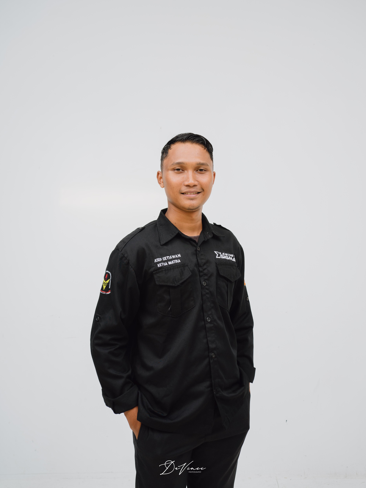

PENGEMBANG 01
Asep Setiawan, S.Pd.
NIM: PPG250429111274
Program Studi: Matematika
Tertarik pada pengembangan media pembelajaran digital yang interaktif dan kontekstual.
Peran dalam RuangMediaMengembangkan media dan konten pembelajaran matematika.